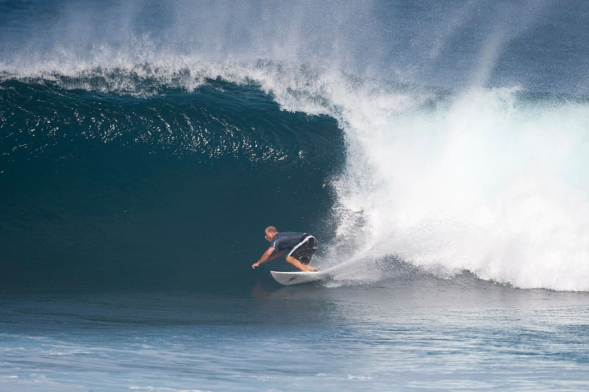

Ho'okipa
Maui, Hawaï · windsurf, surf, kitesurf

Mecque mondiale du windsurf de vagues : alizés puissants et houle solide, pour riders confirmés uniquement.
- Lieu
- Maui, Hawaï
- Niveau
- Expert
- Activités
- windsurf, surf, kitesurf
- Type d'eau
- Mer / océan
- Coordonnées
- 20.93, -156.36 (position approximative du secteur)
Dangers à connaître
- Récif peu profond et coupant.
- Grosses vagues + vent fort.
Le conseil d'Ocean Buddy
Spot d'experts ; observe les locaux avant d'aller à l'eau.
Ouvrir dans Ocean Buddy Télécharger sur l'App Store
Source : Description historique Ocean Buddy · vérification externe en attente.